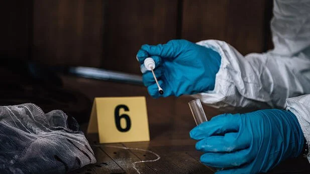
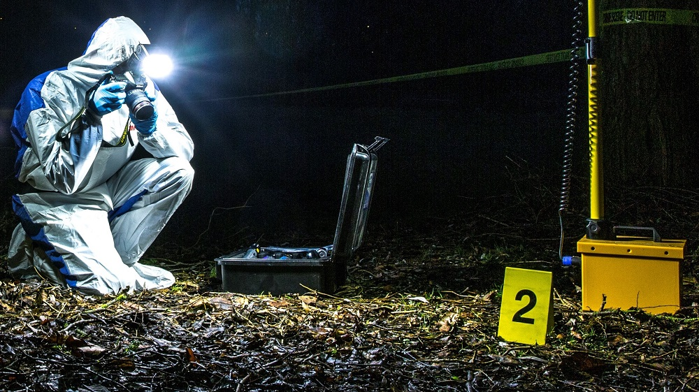
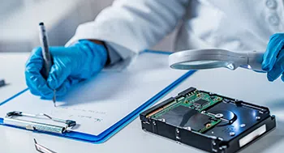
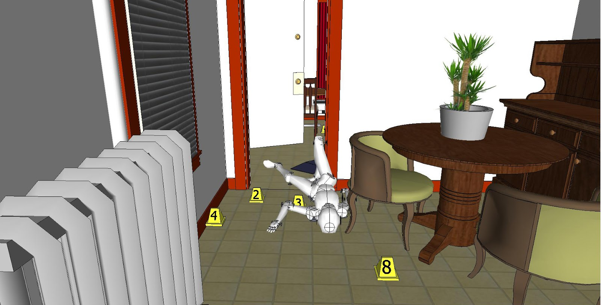

Quem eu sou?
Giovanna Rodrigues Silva
16 anos
2° ano EM
O que eu gosto
.jpg)
O que quero ser?
PERITA CRIMINAL
O perito criminal é um servidor da Polícia ou da Justiça focado
na investigação científica de crimes, chamada de investigação forense.
Seu principal trabalho é ir até o local onde podem ter acontecido as
ocorrências e coletar provas que precisem passar por minuciosa análise
Algumas áreas da pericia criminal

Química Forense

Perito Fotógrafo

Informática Forense
.jpg)
Perícia Ambiental
Como alcançar meu objetivo?
Faculdade de BIOMECINA
Opções
Universidade Estadual de Londrina (UEL)
Universidade Estadual de Maringá (UEM) Universidade Federal do Paraná (UFPR) Universidade de São Paulo (USP) Universidade Estadual Paulista Júlio de Mesquita Filho (UNESP) Universidade Federal de São Paulo (UNIFESP)NA REGIÃO UNIRP - Centro Universitário de Rio Preto UNIFEV - Centro Universitário de Votuporanga
Consurso público
.jpg)
Como a tecnologia auxilia nessa área?
Analise de dados celulares- Exame de DNAe reconhecimento de digital
Recriação da cena do crime
Análise por microvestígicos
.jpg)